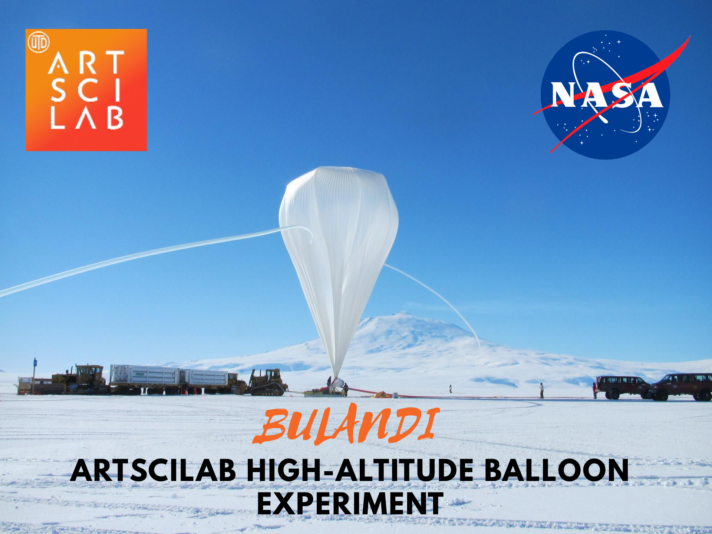
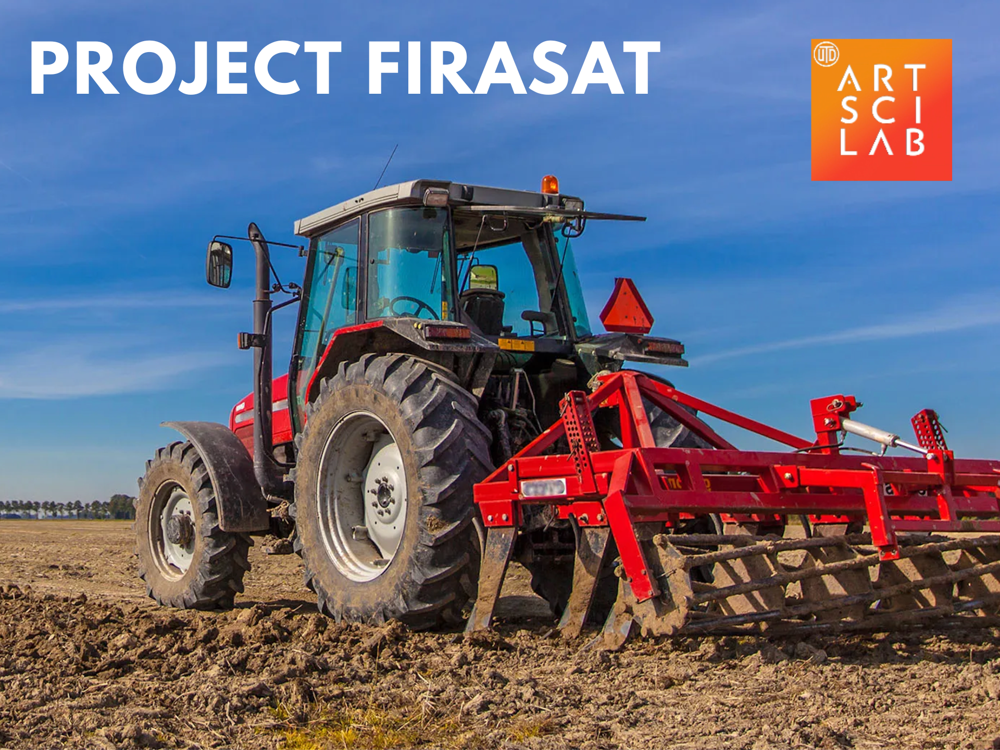
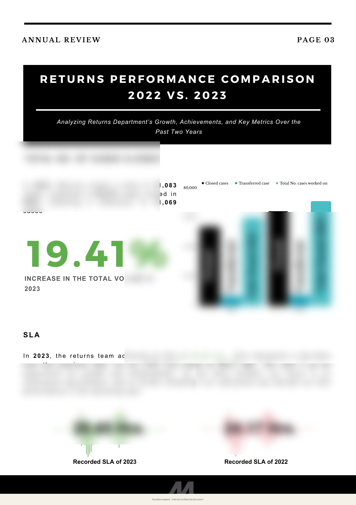
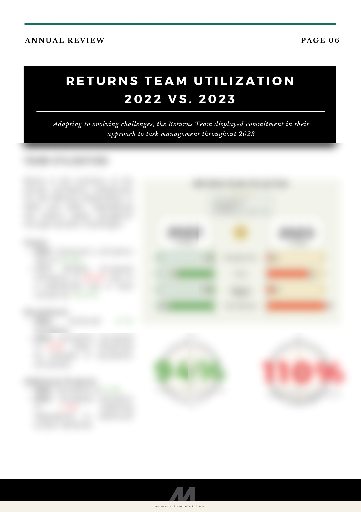
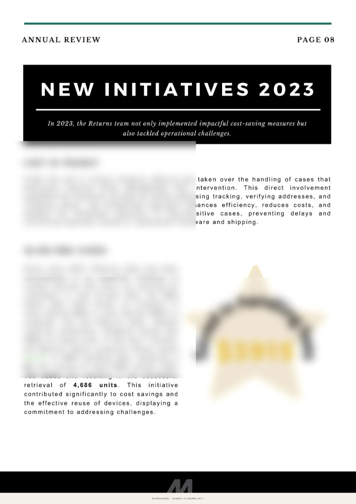
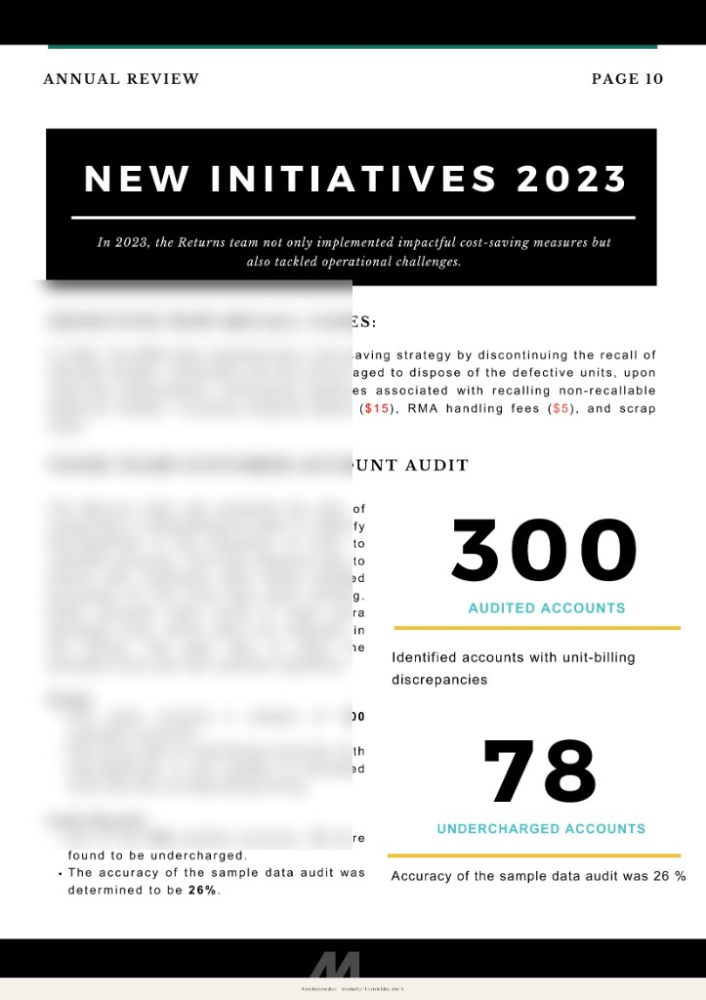
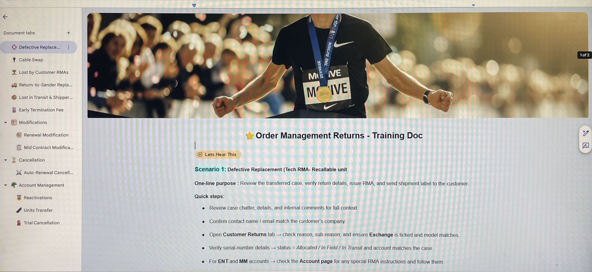
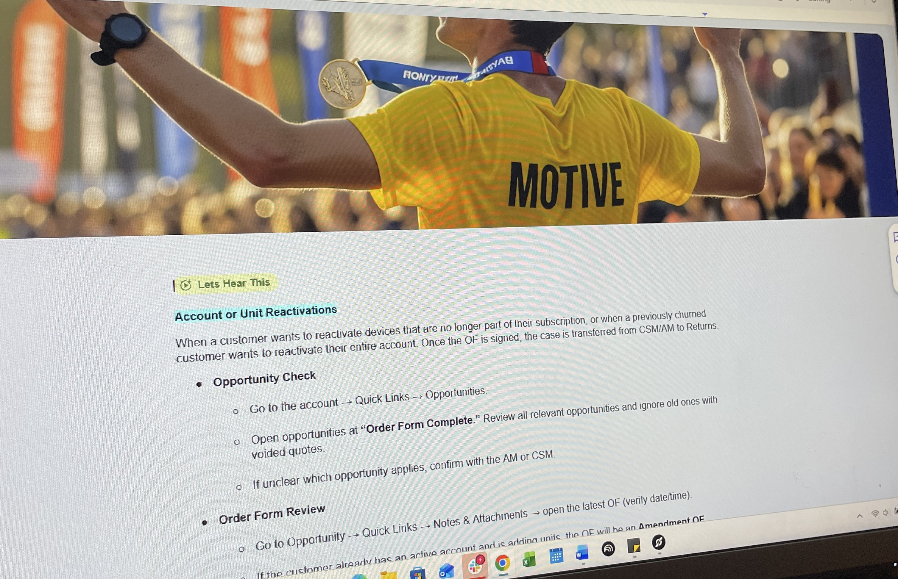
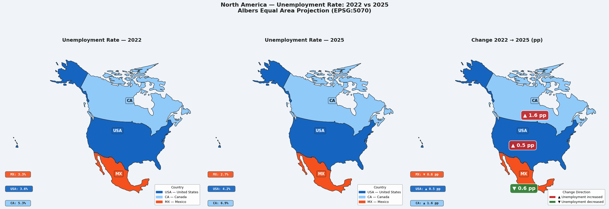
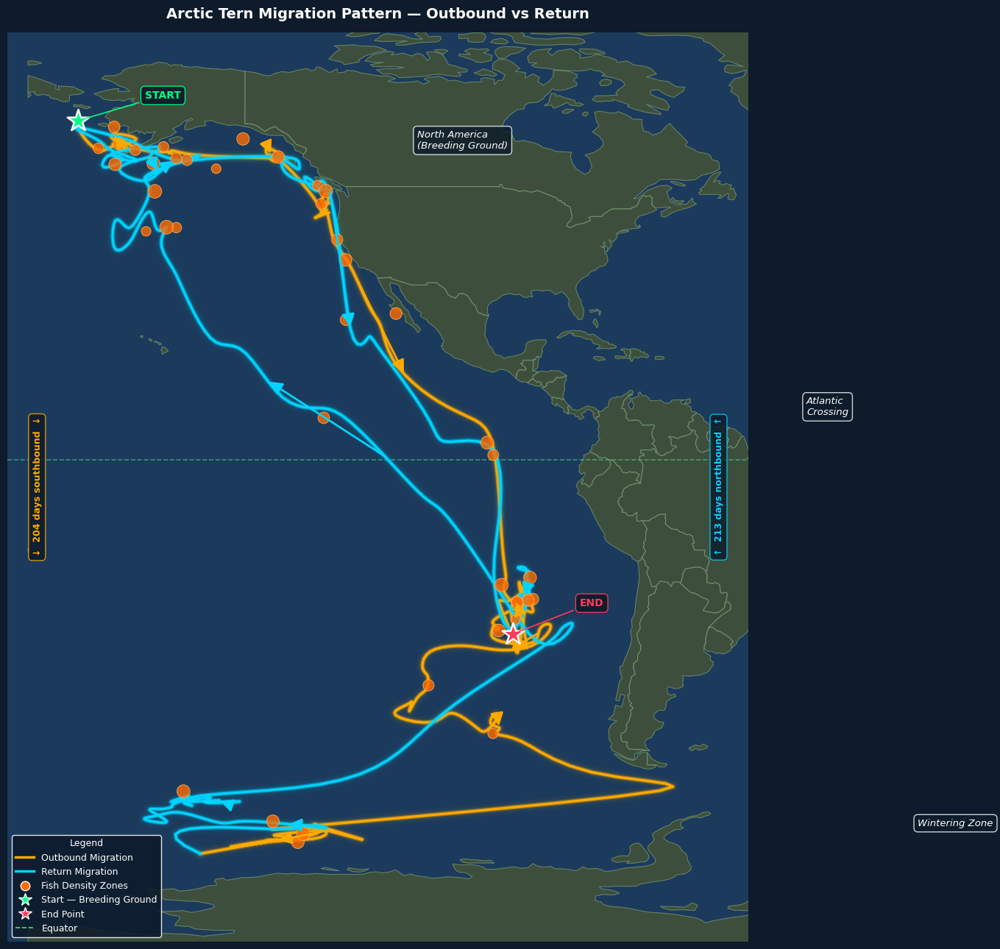

0
Cases closed in one year
Click for context
71,083 cases
Closed in 2023—about 19% more than the year before. Kept reports clear and on time.
Portfolio · Sana · UT Dallas · ArtSci Lab
Cases closed in one year
Click for context
Closed in 2023—about 19% more than the year before. Kept reports clear and on time.
In savings documented
Click for context
CCV savings documented from 2022 to 2023 in internal finance reporting, summarized publicly as $9M+ for readability.
Profit at first food fair test
Click for context
Mom's Thali sold out and hit 60% profit in one day, which validated demand before launch.
Recognized at Motive
Click for context
2× MVP plus Best Talent 2024 for driving measurable outcomes across reporting, audits, and operations.
I love working on the analysis, and to me the telling of it matters just as much. I'm pursuing my MS in Business Analytics & AI while working part-time as Finance and Operations Manager at ArtSci Lab. I'm also leading analytics on a NASA-supported balloon experiment and independent research at the intersection of space weather and business operations. What pulls me through all of it is telling the story inside the numbers in mediums people actually get. Even research is a story, and it deserves to be shared, not buried in words alone. When the paper is ready, that's the work I'll take on next.
Section 02 · Research in Progress
Collaborative stratospheric research including a NASA supported balloon flight carrying our magnetometer payload to the upper atmosphere.
Bulandi (Urdu): going beyond literal heights
Project BULANDI is ArtSciLab's stratospheric balloon experiment, launching August 2026 aboard a NASA supported flight. A Kiwi chip carried to the upper atmosphere will record magnetometer readings throughout its ascent and descent. I am leading the data analytics and visualization workstream, processing magnetic field time series data post flight to identify geomagnetic patterns at altitude, and authoring a white paper on the findings.

Firasat (Urdu): intuitive perception
Firasat is an ongoing independent research at the intersection of space weather and US business operations.

Section 03 · The Thread
"I have a marketing degree I spent years not using the way I intended to. Life moved me into finance and operations, and somewhere in there I stopped thinking of myself as someone who makes things.
Then one month I got tired of sending a report nobody was reading and turned it into a newsletter. Added audio. People actually engaged with it. I remembered something about myself.
That instinct has followed me everywhere. Into finance, into a food startup, into a graduate program. The tools change. The impulse doesn't.
When I sit down to make something, hours pass without my noticing. That is not a cliché. It is just the truest thing I can say about how I work."
BBA Marketing · MBA Marketing · MS Business Analytics & AI (in progress)
Finance & Revenue Operations
Motive
Built from scratch, Rawalpindi, Pakistan
Section 04 · At Work
Numbers masked · Internal confidential document.




A 28-page designed annual report for an internal finance organization. Nobody asked for it to look like this. That was the point. Charts, process flows, visual hierarchy — built to be read, not filed away. Highlighted by VP of Finance.
28 pages · VP Finance highlighted it · $9M+ CCV savings documented
The month end report was functional. It was also invisible. Reformatted into a newsletter. Added NotebookLM audio summaries so stakeholders could listen on the go. Open rates went up. Conversations started.
A comprehensive audit across 300 customer accounts to identify billing discrepancies. Found 78 undercharged accounts. Work kicked off a company-wide data hygiene initiative and went to leadership.
300 accounts · 78 discrepancies · Company-wide initiative triggered
Took ownership of non-deliverable shipment exceptions. Rerouted packages, updated address data before things were lost. Six months: $44,643 saved. Projected $89,286 for the following year.
$44K saved · 6 months · $89K projected 2024
Section 05 · In the Classroom
Turned complex operational knowledge into learning experiences people actually understood, remembered, and enjoyed using.


"Rest by Law, Burnout by Culture." Data visualization midterm at UT Dallas. Explored the mental health cost of modern work culture using data.
Python, Plotly, Folium, Google Colab. A choropleth map designed to be visually clean, not just functional.

Mapped one of the longest animal migrations on earth. The brief was technical. The output was worth looking at.

In progress at UT Dallas, with focus on regression in R, data visualization, and analytical communication.
Section 06 · Origins
"The best food in Rawalpindi sits in the inner city of Pakistan. Down streets you can't drive through, in places women largely can't go. I used to think about that a lot."
"What if everyone could access the city's best food in one place?"
"That idea evolved into something simpler and more urgent. People living away from home genuinely miss home-cooked food. Hostel food is bulk-made and it shows — runny, bland, nothing like what your mother makes.
So we built Mom's Thali. Fresh food. Home recipes. Delivered to hostels on subscription. Every ingredient handpicked. Commercial stoves custom-ordered because nothing off the shelf was quite right.
We tested at a university fair first. Made 60% profit in a single day. People kept coming back. That gave us the confidence to launch.
What stopped us wasn't the food. Our kitchen was 30 minutes from our customers and we didn't see that coming fast enough. I learned more about operations from that one mistake than from anything I ever studied."
Section 07 · Right Now
"I am pursuing my MS in Business Analytics and AI at UT Dallas while working part-time as Finance and Operations Manager at ArtSci Lab in the Bass School — alongside NASA-linked balloon research and independent work in progress.
I work well independently. I take the visual side of communication seriously. And I sit down to make something and lose track of time completely. If that sounds useful to you, let's talk."
ArtSci Lab · MS Business Analytics & AI · UT Dallas
Location
Dallas, Texas
Current role
Finance & Operations Manager (part-time) · ArtSci Lab, Bass School · UT Dallas
Degree
MS Business Analytics & AI · UT Dallas
Email (Primary)
UTD Email